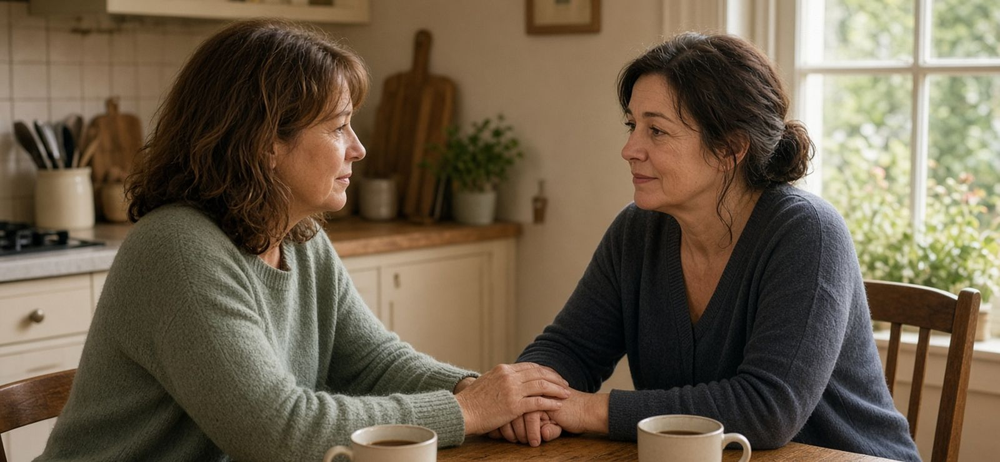

Breast Cancer Beyond Genetics · Part Nine
If You Have Already Been Diagnosed
Much of this book reads as prevention. It is not only prevention.
Several of the strongest findings in these pages come from studies of women who already had breast cancer — measuring recurrence, survival, and how well treatment worked. Those studies were done on women exactly where you are.
This chapter pulls them into one place.

What The Research Says About Women After Diagnosis
Every one of those is something you can begin this week, at almost no cost, without asking anyone’s permission.
During Treatment Itself
These require coordination with your oncology team rather than a decision made alone. Bring them as questions.
Fasting around chemotherapy
Randomized trial · 131 womenThe randomized DIRECT trial studied 131 women with HER2-negative stage II or III breast cancer. Women assigned a fasting-mimicking diet around their chemotherapy were more likely to show a complete or partial tumor response — and had less chemotherapy-related DNA damage in their immune cells.
Go deeper: why fasting may protect healthy cells
The theory is that healthy cells respond to fasting by shifting into a protected, low-activity state, while tumor cells cannot make that switch and remain exposed. Better response, less collateral damage.
Ketogenic diet alongside chemotherapy
Randomized trial · 80 womenA randomized trial of 80 women with locally advanced and metastatic breast cancer added a ketogenic diet to chemotherapy for 12 weeks. Tumors shrank 27mm in the ketogenic group versus 6mm in the control group, and stage decreased significantly in locally advanced patients. There was no difference in metastatic disease.
Melatonin
21 trials in solid tumorsAcross 21 trials in solid tumors, pooled one-year mortality was 37% lower in patients receiving melatonin alongside treatment. Combined with chemotherapy, complete tumor response was about 2.5 times more likely, with less fatigue, less neurotoxicity, and fewer blood count problems.
In a small breast cancer study, women progressing on tamoxifen were given 20mg of melatonin nightly alongside it. Four of fourteen had a partial response.
One Thing You Will Hear That Needs A Caveat
Fasting is often promoted for autophagy — the cellular recycling that clears damaged components. In healthy tissue that is protective, and it is part of why fasting appears in the prevention chapters of this book.
Go deeper: what autophagy does inside an existing tumor
In an existing tumor, the picture reverses. Cancer cells appear to use autophagy to survive starvation, chemotherapy, and long dormancy — and higher autophagy levels correlate with lower survival in several cancers. Oncology is currently running trials on drugs that block it, including hydroxychloroquine, because suppressing it makes chemotherapy work better and preferentially kills the dormant cells that drive recurrence.
This does not undercut the DIRECT trial. That benefit is attributed to healthy cells entering a protected state under fasting while tumor cells cannot — a different mechanism entirely.
But it is a real scientific disagreement, and you deserve to know it exists before someone sells you a fasting protocol on the strength of autophagy alone.
Muscle
Muscle mass predicts how well women tolerate chemotherapy. Protein at every meal and resistance training are not cosmetic during treatment — they protect your ability to complete it on schedule.
Every item on this page belongs in a conversation with your oncology team. Timing matters, and unintentional weight loss during treatment works against you.
Before You Bring Any Of This To Your Appointment
Expect a range of responses, and know why the range exists.
Medical training is built around diagnosis and pharmaceutical treatment. Nutrition gets a few hours across four years — most physicians finish training reporting they do not feel equipped to counsel patients on diet. That is not a character flaw. It is a curriculum.
And much of what a busy physician learns about new treatment after training arrives through pharmaceutical representatives, continuing education funded by industry, and journals shaped by the funding patterns described in Part One. Not fraud. Just a pipeline that carries some information well and other information barely at all.
So some oncologists will engage readily with what is in this chapter. Some are actively interested and already using it. Others will dismiss it, sometimes firmly — and they will not be doing that out of malice. They are working from what reached them.
Do not say you read something online. Bring the study.
Print the DIRECT trial if you want to discuss fasting around chemotherapy. Print the ketogenic trial if that is your question. The references at the back of this book are there for exactly this.
Then ask specifically: is there a reason this would not be appropriate for my situation?
That question is answerable and invites a clinical response. “What do you think about fasting?” invites an opinion.
Two things worth knowing
You are allowed to ask for a second opinion, and asking for one is normal rather than an insult.
And there are physicians who specialize in exactly this — integrative and functional oncology — who work alongside conventional treatment rather than in place of it.
If your oncologist is a good technical match for your cancer but not interested in this conversation, you do not have to choose between them. Keep the oncologist. Add someone else for this part.
Three Things To Be Careful About
Questions Worth Bringing To Your Team
- Is there any reason I should not be exercising during treatment?
- What is my current muscle mass, and should we be protecting it?
- Are there fasting protocols you would support around my chemotherapy schedule?
- Should I be checking my vitamin D level?
- Do any of my supplements interact with what you are prescribing?
- Is my blood sugar or fasting insulin worth measuring?
- What is the absolute benefit of each treatment you are recommending?
A good oncologist will not be offended by any of these. Several will be glad you asked.
One Thing Worth Saying Plainly
If you are reading this after a diagnosis, some part of you may be running back through the years looking for what you did wrong.
You were living inside an environment you did not design, eating from a food supply you did not build, using products nobody told you to question. The information in this book was available to researchers for decades and was never handed to you.
What is true now is simpler and more useful: the conditions still matter. Recurrence, treatment response, and survival all responded measurably to the things in this chapter, in studies of women who were exactly where you are.
You are not too late. You are at the point where this research was actually done.